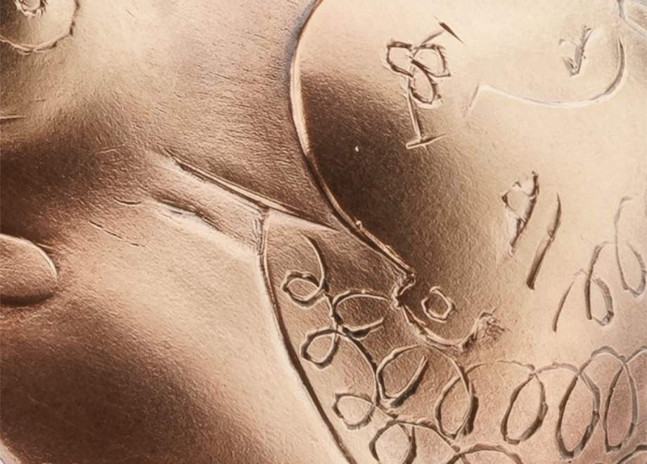
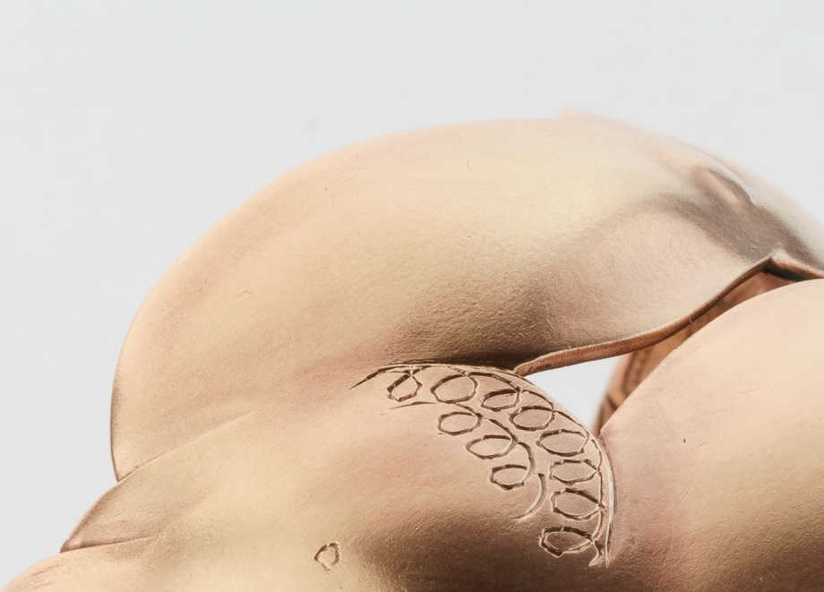
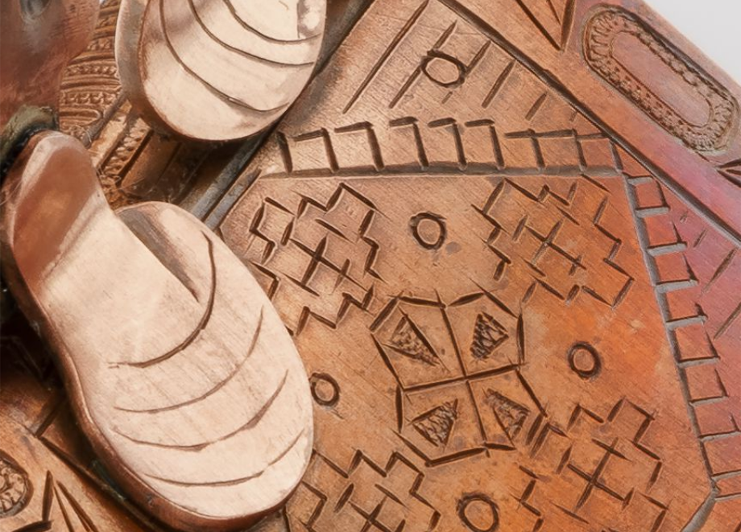
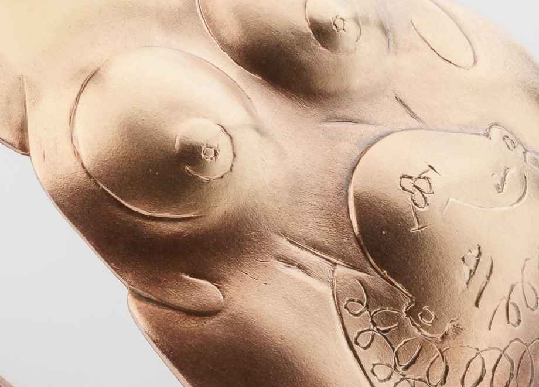
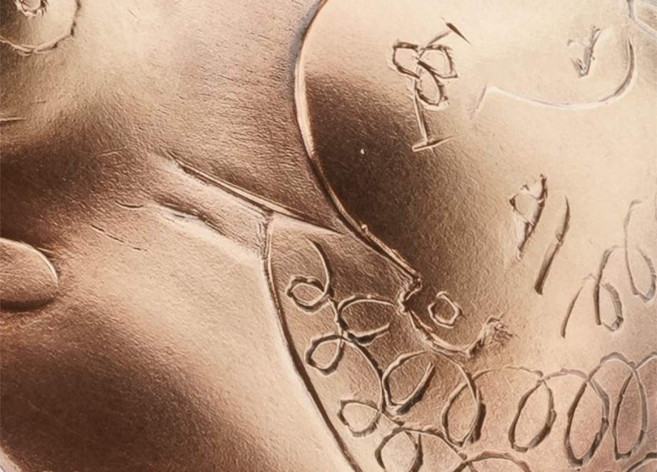
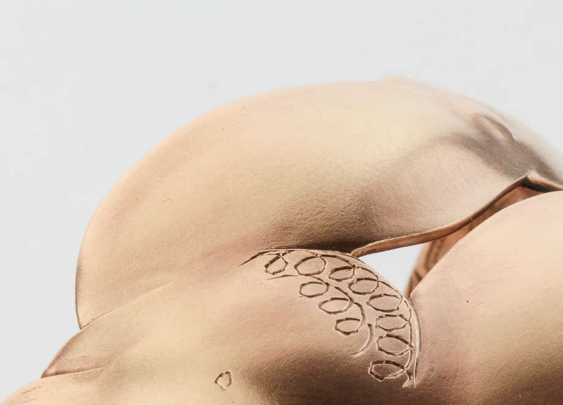
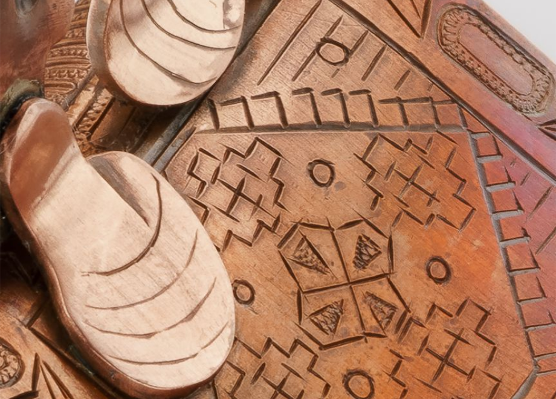
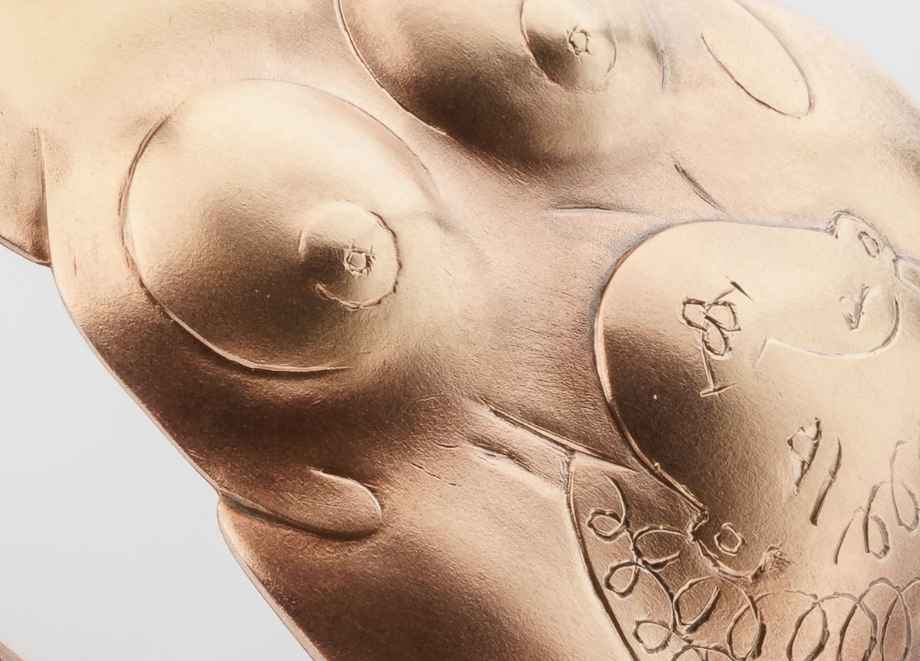

Браслет
ЗОЖница на мостике
медь, патина, гравировка, 2019
ЗОЖница на мостике
медь, патина, гравировка, 2019
Собирательный образ жительницы исторического центра Питера, в котором есть место белым ночам, разводным мостам, советским коврам и дореволюционному паркету, утренней йоге и кофе с пышками.
Фото: Макс Нестеров 






